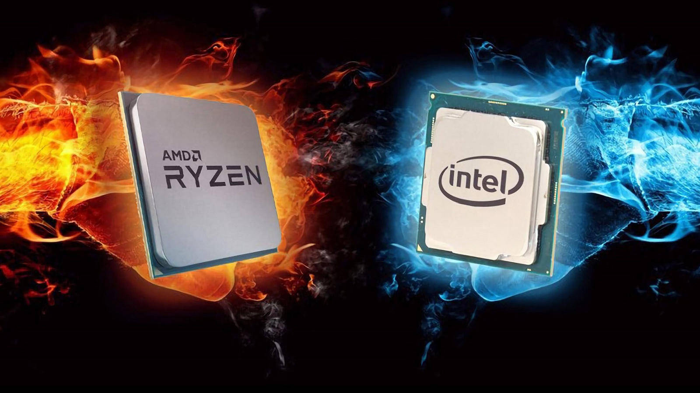

Nuevas novedades de Amd y Intel
Tras su anuncio en CES 2022, AMD ha publicado nuevos detalles sobre los Procesadores AMD Ryzen PRO 6000 Series, basados en la potente arquitectura de núcleo «Zen 3+» de 6 nm con gráficos AMD RDNA 2 mejorados. Los nuevos Procesadores Ryzen PRO demuestran un rendimiento hasta un 17% más rápido cuando se usan aplicaciones de productividad de MS Office, como PowerPoint, Excel y Outlook, mientras se ejecutan simultáneamente las conferencias de Microsoft Teams. Los sistemas con Procesadores de la Serie Ryzen PRO 6000 también vieron hasta un 45% más de duración de la batería para videoconferencias. La próxima generación de Lenovo ThinkPads y HP EliteBooks contará con la tecnología de los Procesadores Ryzen PRO 6000 Series y se beneficiará de las funciones de seguridad mejoradas, la capacidad de administración inalámbrica y la estabilidad del sistema de las tecnologías AMD PRO.
Intel es la única alternativa a TSMC en cuanto a la fabricación de chips avanzados según afirma la compañía Northland Capital Markets. Tras años de complicaciones, Intel parece estar en la dirección correcta para la consolidación de su área de negocio en torno a la fabricación de chips a través de sus Intel Foundry Services (IFS). Los ingresos de Intel en la división IFS han crecido un 175% siendo una de las áreas emergentes de la empresa. Las ganancias de esta división han aumentado gracias a fenómenos como el de la escasez de chips en automoción. Northland Capital Market afirma que Intel es la única alternativa a TSMC para la fabricación avanzada de chips por debajo de 7 nm. Según parece, Intel ya habrá acabado para 2022 los diseños de los chips de 3 nm y 18A. Por otro lado, Northland Capital Market ha comentado que Samsung estaría teniendo problema con los yields de sus fabs. Es más, Samsung parece que va a encargar a TSMC la fabricación de algunos chips. De hecho, Samsung habría estado ocultando datos sobre los yields en los meses pasados, que han salido a la luz el mes de febrero pasado.
Nuevos productos destacados